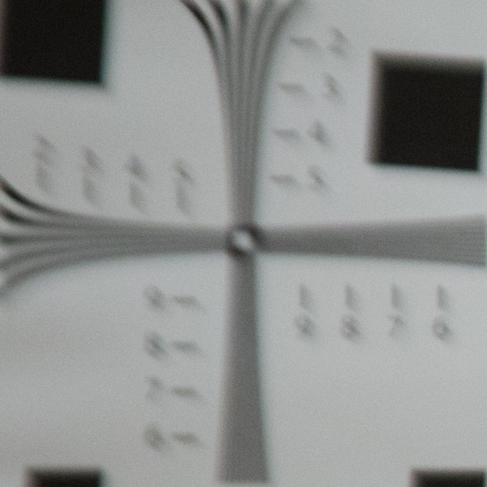

Below are images of a test chart taken with the broken lens at 28mm - click (or tap) on each image to see the same region of the test chart taken with the fixed lens.


These ones were taken at 135mm:


In this video, I show how to use the reflections off the internal elements of a camera lens to find out-of-place elements, and how I used that trick to fix my Canon 28-135 f/3.5-5.6.
Below are images of a test chart taken with the broken lens at 28mm - click (or tap) on each image to see the same region of the test chart taken with the fixed lens.
These ones were taken at 135mm:
Here are some photos I took in Red Rock, Nevada with the fixed lens: